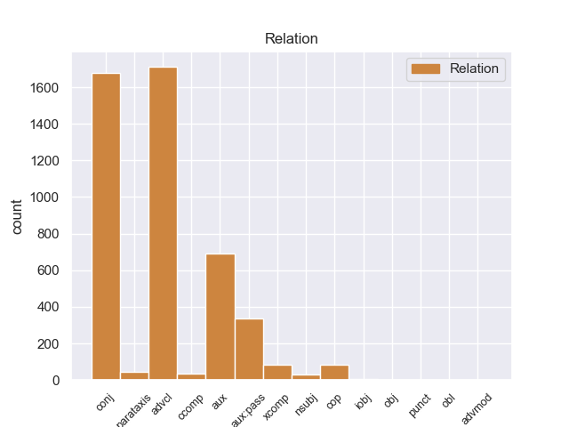
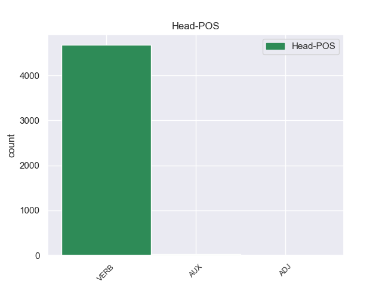
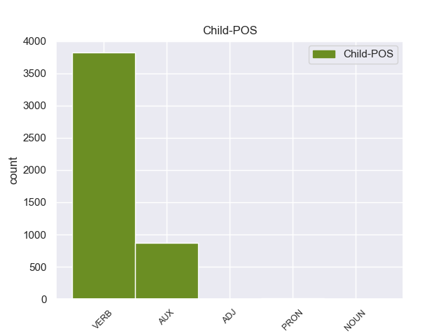

Distribution of features within this leaf



Agreement Rules sorted by frequency.
1 Una _ _ _ _ 0 _ _ _
2 vez _ _ _ _ 0 _ _ _
3 que _ _ _ _ 0 _ _ _
4 el _ _ _ _ 0 _ _ _
5 Hijo _ _ _ _ 0 _ _ _
6 de _ _ _ _ 0 _ _ _
7 Krypton _ _ _ _ 0 _ _ _
8 suelta suelta VERB _ Mood=Ind|Number=Sing|Person=3|Tense=Past|VerbForm=Fin 0 _ _ _
9 el _ _ _ _ 0 _ _ _
10 misil _ _ _ _ 0 _ _ _
11 , _ _ _ _ 0 _ _ _
12 este _ _ _ _ 0 _ _ _
13 intenta intentar VERB _ Mood=Ind|Number=Sing|Person=3|Tense=Pres|VerbForm=Fin 8 aux _ _
14 huir _ _ _ _ 0 _ _ _
15 de _ _ _ _ 0 _ _ _
16 el _ _ _ _ 0 _ _ _
17 lugar _ _ _ _ 0 _ _ _
18 pero _ _ _ _ 0 _ _ _
19 es _ _ _ _ 0 _ _ _
20 atrapado _ _ _ _ 0 _ _ _
21 en _ _ _ _ 0 _ _ _
22 la _ _ _ _ 0 _ _ _
23 explosión _ _ _ _ 0 _ _ _
24 . _ _ _ _ 0 _ _ _
Disagree Examples:
1 Con _ _ _ _ 0 _ _ _
2 otra _ _ _ _ 0 _ _ _
3 oferta _ _ _ _ 0 _ _ _
4 sobre _ _ _ _ 0 _ _ _
5 la _ _ _ _ 0 _ _ _
6 mesa _ _ _ _ 0 _ _ _
7 , _ _ _ _ 0 _ _ _
8 el _ _ _ _ 0 _ _ _
9 brasileño _ _ _ _ 0 _ _ _
10 de _ _ _ _ 0 _ _ _
11 el _ _ _ _ 0 _ _ _
12 Wolfsburgo _ _ _ _ 0 _ _ _
13 tendría tener VERB _ Mood=Cnd|Number=Sing|Person=3|VerbForm=Fin 0 _ _ _
14 casi _ _ _ _ 0 _ _ _
15 atada _ _ _ _ 0 _ _ _
16 su _ _ _ _ 0 _ _ _
17 salida _ _ _ _ 0 _ _ _
18 hacia _ _ _ _ 0 _ _ _
19 la _ _ _ _ 0 _ _ _
20 capital _ _ _ _ 0 _ _ _
21 de _ _ _ _ 0 _ _ _
22 España _ _ _ _ 0 _ _ _
23 según _ _ _ _ 0 _ _ _
24 declaró declarar VERB _ Mood=Ind|Number=Sing|Person=3|Tense=Past|VerbForm=Fin 13 advcl _ _
25 su _ _ _ _ 0 _ _ _
26 agente _ _ _ _ 0 _ _ _
27 y _ _ _ _ 0 _ _ _
28 también _ _ _ _ 0 _ _ _
29 su _ _ _ _ 0 _ _ _
30 padre _ _ _ _ 0 _ _ _
31 a _ _ _ _ 0 _ _ _
32 AS _ _ _ _ 0 _ _ _
33 hace _ _ _ _ 0 _ _ _
34 unas _ _ _ _ 0 _ _ _
35 horas _ _ _ _ 0 _ _ _
36 . _ _ _ _ 0 _ _ _
1 Era _ _ _ _ 0 _ _ _
2 un _ _ _ _ 0 _ _ _
3 mozo _ _ _ _ 0 _ _ _
4 gallardo _ _ _ _ 0 _ _ _
5 , _ _ _ _ 0 _ _ _
6 guapo _ _ _ _ 0 _ _ _
7 , _ _ _ _ 0 _ _ _
8 bien _ _ _ _ 0 _ _ _
9 plantado _ _ _ _ 0 _ _ _
10 , _ _ _ _ 0 _ _ _
11 que _ _ _ _ 0 _ _ _
12 llevaba llevar VERB _ Mood=Ind|Number=Sing|Person=3|Tense=Imp|VerbForm=Fin 0 _ _ _
13 una _ _ _ _ 0 _ _ _
14 vida _ _ _ _ 0 _ _ _
15 intensa _ _ _ _ 0 _ _ _
16 y _ _ _ _ 0 _ _ _
17 que _ _ _ _ 0 _ _ _
18 [ _ _ _ _ 0 _ _ _
19 tendría tener VERB _ Mood=Cnd|Number=Sing|Person=3|VerbForm=Fin 12 conj _ SpaceAfter=No
20 ] _ _ _ _ 0 _ _ _
21 muchos _ _ _ _ 0 _ _ _
22 hijos _ _ _ _ 0 _ _ _
23 . _ _ _ _ 0 _ _ _
1 El _ _ _ _ 0 _ _ _
2 ayuntamiento _ _ _ _ 0 _ _ _
3 de _ _ _ _ 0 _ _ _
4 Mérida _ _ _ _ 0 _ _ _
5 elevó _ _ _ _ 0 _ _ _
6 a _ _ _ _ 0 _ _ _
7 el _ _ _ _ 0 _ _ _
8 rey _ _ _ _ 0 _ _ _
9 una _ _ _ _ 0 _ _ _
10 opinión _ _ _ _ 0 _ _ _
11 suplicándo _ _ _ _ 0 _ _ _
12 le _ _ _ _ 0 _ _ _
13 que _ _ _ _ 0 _ _ _
14 suspendiera _ _ _ _ 0 _ _ _
15 la _ _ _ _ 0 _ _ _
16 medida _ _ _ _ 0 _ _ _
17 en _ _ _ _ 0 _ _ _
18 Yucatán _ _ _ _ 0 _ _ _
19 con _ _ _ _ 0 _ _ _
20 el _ _ _ _ 0 _ _ _
21 argumento _ _ _ _ 0 _ _ _
22 de _ _ _ _ 0 _ _ _
23 que _ _ _ _ 0 _ _ _
24 lesionaba _ _ _ _ 0 _ _ _
25 seriamente _ _ _ _ 0 _ _ _
26 la _ _ _ _ 0 _ _ _
27 economía _ _ _ _ 0 _ _ _
28 de _ _ _ _ 0 _ _ _
29 la _ _ _ _ 0 _ _ _
30 colonia _ _ _ _ 0 _ _ _
31 e _ _ _ _ 0 _ _ _
32 inclusive _ _ _ _ 0 _ _ _
33 , _ _ _ _ 0 _ _ _
34 para _ _ _ _ 0 _ _ _
35 tal _ _ _ _ 0 _ _ _
36 ruego _ _ _ _ 0 _ _ _
37 , _ _ _ _ 0 _ _ _
38 se _ _ _ _ 0 _ _ _
39 designó designar VERB _ Mood=Ind|Number=Sing|Person=3|Tense=Past|VerbForm=Fin 0 _ _ _
40 a _ _ _ _ 0 _ _ _
41 un _ _ _ _ 0 _ _ _
42 procurador _ _ _ _ 0 _ _ _
43 especial _ _ _ _ 0 _ _ _
44 en _ _ _ _ 0 _ _ _
45 Madrid _ _ _ _ 0 _ _ _
46 a _ _ _ _ 0 _ _ _
47 fin _ _ _ _ 0 _ _ _
48 de _ _ _ _ 0 _ _ _
49 que _ _ _ _ 0 _ _ _
50 atendiera atender VERB _ Mood=Sub|Number=Sing|Person=3|Tense=Imp|VerbForm=Fin 39 advcl _ _
51 el _ _ _ _ 0 _ _ _
52 trámite _ _ _ _ 0 _ _ _
53 respectivo _ _ _ _ 0 _ _ _
54 , _ _ _ _ 0 _ _ _
55 trámite _ _ _ _ 0 _ _ _
56 que _ _ _ _ 0 _ _ _
57 fue _ _ _ _ 0 _ _ _
58 infructuoso _ _ _ _ 0 _ _ _
59 . _ _ _ _ 0 _ _ _